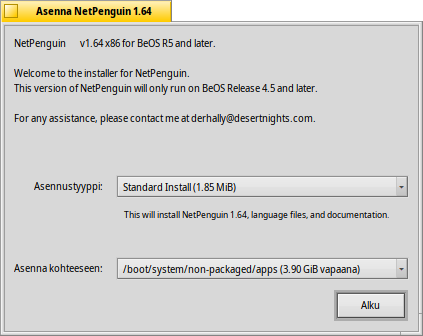
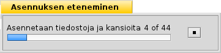

Suomi
Suomi Français
Français Deutsch
Deutsch Italiano
Italiano Русский
Русский Español
Español Svenska
Svenska 日本語
日本語 Українська
Українська 中文 ［中文］
中文 ［中文］ Português
Português Slovenčina
Slovenčina Magyar
Magyar Português (Brazil)
Português (Brazil) English
EnglishPakkausasennin
| Työpöytäpalkki | Ei löydy Työpöytäpalkista, käynnistetään normaalisti kaksoisnapsauttamalla tuettua tiedostoa. | |
| Sijainti | /boot/system/apps/PackageInstaller | |
| Asetukset | ei mitään |
Tämä on nykyään vain ensimmäinen luonnos. Tarkista myöhemmin uudelleen parannettua versiota.
Pakkausasennin on ohjelman asentaja BeOS-pakkauksille PKG-muodossa. Se tarjoaa helposti käytettävän graafisen käyttöliittymän, joka opastaa Haikun nopeassa paketinasennuksessa.
Tämä suoritetaan automaattisesti kun yrität avata .pkg-tarkentimella varustettuja tiedostoja.
Pääikkunasta pääsee käsiksi kaksiin asetuksiin:
- asennustyyppi (riippuen kehittäjästä, jolla on ehkä useampia kuin yksi (vakio) asennusvalitsin).
- asennussijainti (vain kokonaiset osiot/levyasemat voidaan valita, ei räätälöityjä polkuja)
Asenna-painikkeen napsauttamisen jälkeen pakkausten purkaminen ja asennusprosessi alkaa.
Tässä vaiheessa voi esiintyä varoituksia, joissa sanotaan, että ohjelman suorittamiseen tarvittavia kirjastoja tai riippuvuuksia voi puuttua. Saattaa olla tarpeellista asentaa nämä paketit ennen kuin yrität asentaa haluttua ohjelmaa.
Kun asennus on valmis, pakkauksen pitäisi näkyä Työpöytäpalkin sovellusvalikossa.